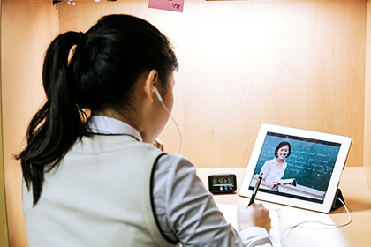

플립러닝은 기존 주입식 수업의 문제점을 해결할 수 있는 혁신적인 교육모델로 인정받으며 전세계 명문대학과 교육선진국을 중심으로 빠르게 전파되고 있는 교수학습법입니다.
플립러닝 교수학습법

유투엠은 대한민국 최초로
플립러닝(Flipped Learning) 수학교육 모델을 창안하여
주입식 수학교육을 혁신하였습니다.
기존 주입식 수학교육은 교사가 일방적으로 전달하는 지식을 듣고 집에서 문제풀이 숙제를 하는 방식입니다. 학생이 수동적으로 듣기만 하는 주입식 수업은 학습효과가 현저하게 낮을 뿐만 아니라 숙제로 부과되는 응용 심화 문제를 완전하게 해결하지 못하는 불완전학습 수업모델입니다.
유투엠은 이러한 주입식 수학교육을 거꾸로 뒤집었습니다.
수업 전에 기본개념을 먼저 예습한 후 교실수업에서는 응용, 심화 문제를 풀면서 지식을 심화시키고, 말하기 학습전략을 통해 학생이 수업과정에 적극적으로 참여하는 ‘학생중심의 참여수업’을 진행합니다.
유투엠은 대한민국 수학대표 올림피아드교육이 국내 최초로 플립러닝 학습법을 창안하여 기존의 주입식 수학교육을 거꾸로 뒤집은 미래 수학의 혁신적 대안모델입니다.
"교사중심의 수동적인 주입식 수업을
학생중심의 능동적 참여학습으로"
기존의 수업모델
-
교실에서
- 교사 중심
- Teaching
-
 집에서
집에서
- 문제풀이 숙제
- Learning
플립러닝 수업구조
-
 수업전
- 디딤영상 예습
- Teaching
-
교실에서
- 학생중심 참여수업
- 심화문제풀이, 토론, 발표
- Learning
플립러닝은?
-
플립러닝은 교실에서 강의를 듣고
집에서 숙제를 했던 기존의 주입식 교육방식을 거꾸로 뒤집은 혁신적인 수업모델입니다.수업 전에 디딤 영상을 통해 미리 기본 지식을 예습한 후, 교실에서는 학생이 능동적으로 수업에 참여하여 질문과 토론, 발표와 설명을 통해 사고를 확장하고, 응용문제와 심화문제 풀이를 하면서 깊이 있는 공부를 하는 수업방식입니다. 사고력과 창의력을 확장시키고 미래사회의 핵심역량을 키우는 수업방식으로 알려지면서 플립러닝은 4차 산업혁명 시대의 혁신적 미래교육 모델로 전 세계 교육계에서 인정받고 있습니다.
-
기존 주입식 수업보다 학습효과가 훨씬 높고 학생들의 학습에 대한 자기주도성과 적극성을 높이는 교수학습방식입니다.
학습효과가 기존 주입식 수업보다 훨씬 높고 학생들의 학습에 대한 자기주도성과 적극성을 높이는 교수학습방식으로 입증되면서 국내 공교육에서도 빠르게 확산되고 있는 수업방식입니다. 2012년 카이스트에서 처음 도입 후 서울대 수학과, 고려대, 연세대 등 최상위 대학들에서 본격적으로 도입하고 있고, 전국의 수많은 초중고교 교실에서도 활발하게 적용되고 있습니다. 2015 교육과정 개편에서 학생중심 참여수업과 과정중심평가가 중심 의제로 도입되면서 하브루타와 플립러닝에 기반한 학생참여수업은 주입식 교육을 혁신할 수 있는 대안적 교육모델로 평가받고 있습니다.